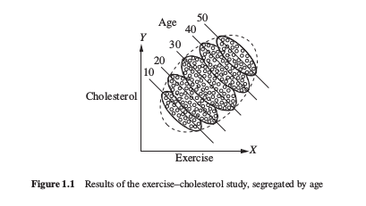
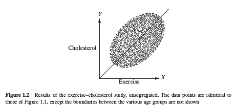
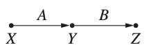
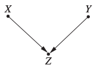

Chapter1
Preliminaries: Statistical and Causal Models
1. Why Study Causation
"causation"的意思是因果关系，学习因果关系是因为我们需要通过理解数据来做出更好的决策和行动，从失败或者成功的经历中获取知识。作者通过辛普森悖论来讲述了因果关系在统计学习中的重要性。
Simpson 悖论
我们想测试一种新研制出的药物对A疾病是否有效，邀请了700位病人来进行试验，其中一半服用新药，一半不服用。得到的结果如下表：
| Drug | No drug | |
|---|---|---|
| Men | 81 out of 87 recoverd (93%) | 234 out of 270 recovered (87%) |
| Women | 192 out of 263 recovered (73%) | 55 out of 80 recovered (69%) |
| Combined data | 273 out of 350 recovered (78%) | 289 out of 350 recovered (83%) |
根据实验结果，如果是女/男患者，那么医生应该给患者服用新药，如果是一个不知性别的患者，那到底我们应该根据性别分组的结果给患者用药呢，还是根据总体数据的结果不给患者用药呢?这就是由于缺少问题因果关系而产生的悖论。
在变量连续的问题上同样存在这样的问题。


如果不考虑年龄的话，Cholesterol跟Exercise是正相关的，一旦考虑了年龄，二者就是负相关的。
由上面两个例子可以看出，利用传统的统计方法，我们很难直接从数据中获得因果关系的信息，通常我们都是对因果关系进行假设，比如上面的例子中假设性别对药效是有影响的，但这样的假设很可能导致悖论的发生。所以我们考虑 利用额外的统计方法来表达因果关系假设，这些方法就是这本书的重点。为了理解数据背后的因果关系，我们需要解决下面几个问题：
- 如何定义因果关系（causation）
- 如何表达因果关系的假设，即如何建立一个因果模型（causal model）
- 如何将因果模型和数据特征连接起来
- 如何通过结合数据及模型中隐藏的因果关系假设来得出结论
首先定义causation，如果变量Y的取值依赖于变量X的取值，我们说X是产生Y的原因（X is a cause of Y）.其余问题在书后面几章进行回答。
2.Perimilinaries
下面是一下必要的统计知识和图论知识。
Independent 独立
我们称事件与事件相互独立，当时。
Conditionally Independent 条件独立
条件独立是图网络一个很重要的概念。两个事件A和B，对另一事件C，如果满足
则称事件A与事件B条件独立。
贝叶斯公式
全概率公式
对于事件和一系列事件，事件发生的概率
图

父节点、子节点、祖先节点、子孙节点：
这几个概念可以按照日常生活中的称谓来理解，在上图上，存在三个节点，直接指向，所以是的父节点，是的子节点，同理，是的父节点，是的子节点；是的祖先节点，是的子孙节点。
3. Structural Causal Models (SCM)
建模因果假设：
一个SCM模型包括两个变量集合和，一个由函数构成的集合，其中将中的变量映射到其他变量。由此我们将因果关系(causation)的定义进行扩展：一个变量是导致的直接原因(direct cause)，当是决定取值的函数中的一个因变量，即.
中的变量称为外生变量(exogenous)，中的变量成为内生变量(endogenous)。每一个内生变量至少是一个外生变量的子孙节点，外生变量不能是任何其他变量的子孙节点，在图网络中为根节点。实际上就是假设内生变量的值受外生变量的影响，外生变量取值受什么影响我们就不去考虑了。
下面是一个简单的SCM的例子，X表示学历，Y表示就职年限，Z表示薪资水平，我们想建立模型表示学历及就职年限如何影响薪资水平。

将作为外生变量，为内生变量，
乘积分解
对于所有无环图，有下面的乘积分解式成立，
表示的父节点。比如一个简单的链式图， 公式成立是基于各节点间的独立关系，这个将会在下一章中详细解释。
接下来就该进入第二章啦～～～